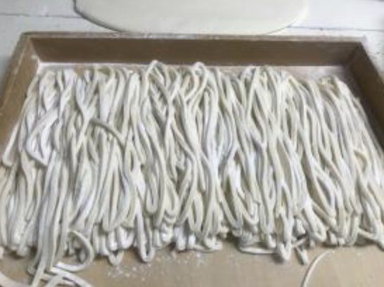
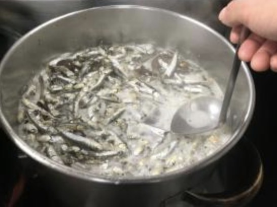
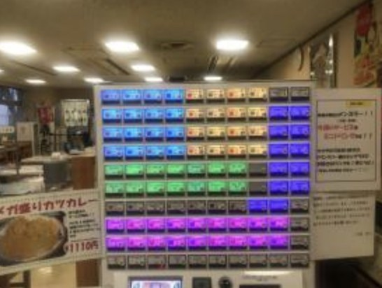
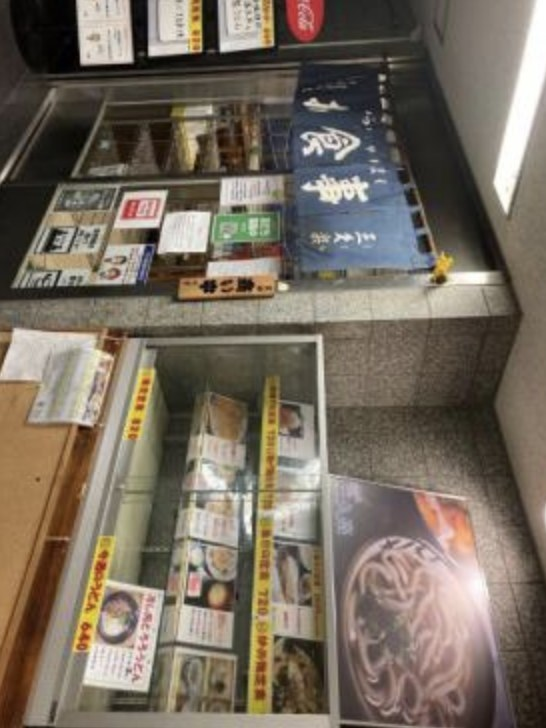
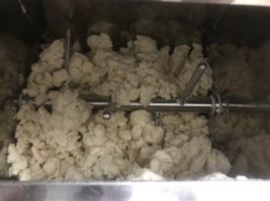
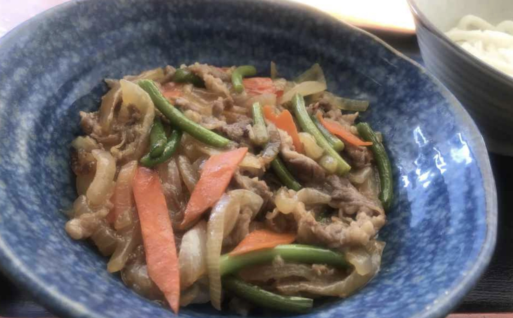
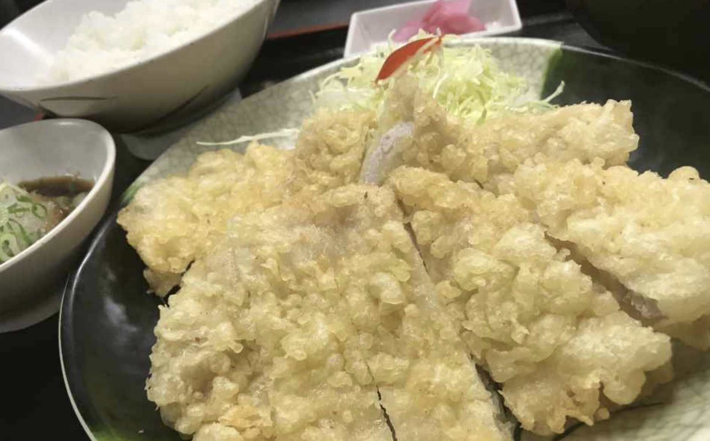

M・Sさん
調理／7年目・未経験入社
包丁もろくに握れないところから始めました。提供と盛り付けだけで半年、今は朝の出汁も任されています。急かされないので身につきました。
毎日、一から打つ。
それが、この店の仕事です。
国産小麦「讃岐の夢」の全粒粉をブレンドした自家製うどん。日替わりの丼が付くサービスセット、定食、名物のメガ盛りカツカレー。三久楽（さくら）は、成田空港の貨物地区で働く方々の食事どころとして20年近く営んできました。
今回の募集は、人が抜けたからではなく増員のためです。段取りを覚えて、いずれお店を支える存在になってくれる方をお待ちしています。

朝の出汁取り、生地の仕込み、製麺。天候で水分量を変えるような細かい判断まで、順を追って覚えていけます。最初は提供と盛り付けから。10年やっても発見があると言うスタッフもいる、奥のある仕事です。

日曜・祝日と年末年始はお休み。飲食店では珍しく土日祝の予定が立てられます。残業も月平均1時間ほどで、基本的にありません。入社6ヶ月後に有給10日、計画的付与もあるので休みの相談がしやすい職場です。

6名の小さな店です。「こうしたらもっと良くなる」というアイデアは大歓迎で、決まるのも早い。食券機を使ったスタイルなので会計の負担も少なく、調理とお客様への対応に集中できます。60代のスタッフも現役で活躍中です。




※ここはサンプルです。実際には御社スタッフの1日の流れに差し替えます。（早番 8:00〜16:00 の例）
※ここはサンプルです。実際に働く先輩の写真・お名前・メッセージに差し替えます。
包丁もろくに握れないところから始めました。提供と盛り付けだけで半年、今は朝の出汁も任されています。急かされないので身につきました。
子どもが小さいので、日曜と祝日が確実に休めるのが決め手でした。運動会も参観日も行けています。
麺は毎日打ちます。天気で水分量が変わるので、同じ日はひとつもありません。そこが面白くて続けています。
60歳を過ぎてからの入社です。分担がはっきりしていて無理がなく、同世代もいるので気が楽ですよ。
常連さんが多い店です。顔と好みを覚えると、仕事が一気に楽しくなります。
朝の2時間で仕上げる弁当づくり。段取りがぴたりとハマったときは気持ちいいです。
※ここはサンプルです。実際には御社の「よくある質問」が入ります。
※ここはサンプルです。実際の担当者の写真・メッセージに差し替えます。
「まず話だけ聞いてみたい」「シフトの相談をしたい」でも構いません。飲食が初めての方も、久しぶりに働き始める方も、まずは気軽にご連絡ください。お店を見に来ていただくだけでも歓迎です。
応募・お問い合わせへ※記載の労働条件はハローワーク求人票（求人番号 12100-06333961／12100-06331761）に基づくものです。採用時には書面にて労働条件を明示いたします。
電話は代表の森が直接受けます。「話だけ聞いてみたい」で構いません。ハローワーク経由の場合は、紹介状をお持ちのうえ面接にお越しください。
※貨物地区へお越しの際は身分証明書（免許証・保険証・パスポートのいずれか）が必要です。
※お車の方は第2ターミナル方向から見てガソリンスタンド先の検問所からお入りください。